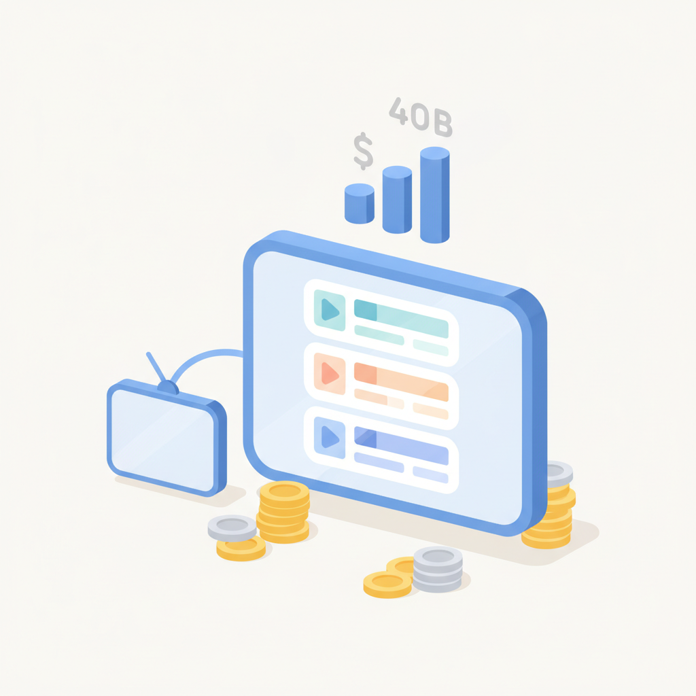
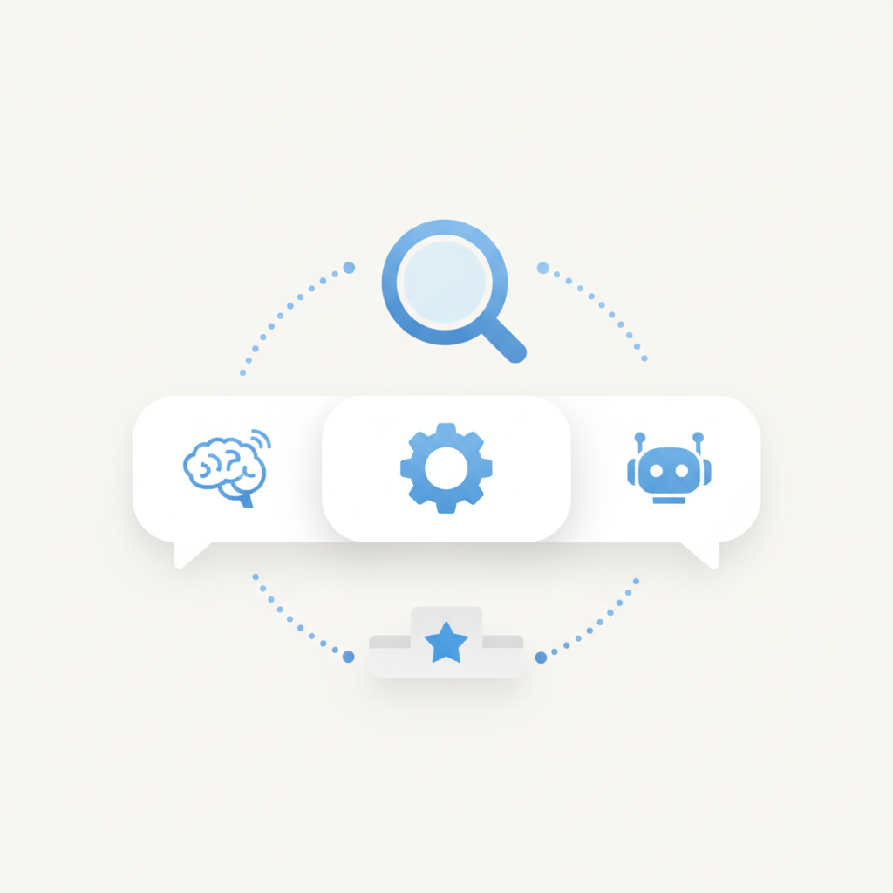
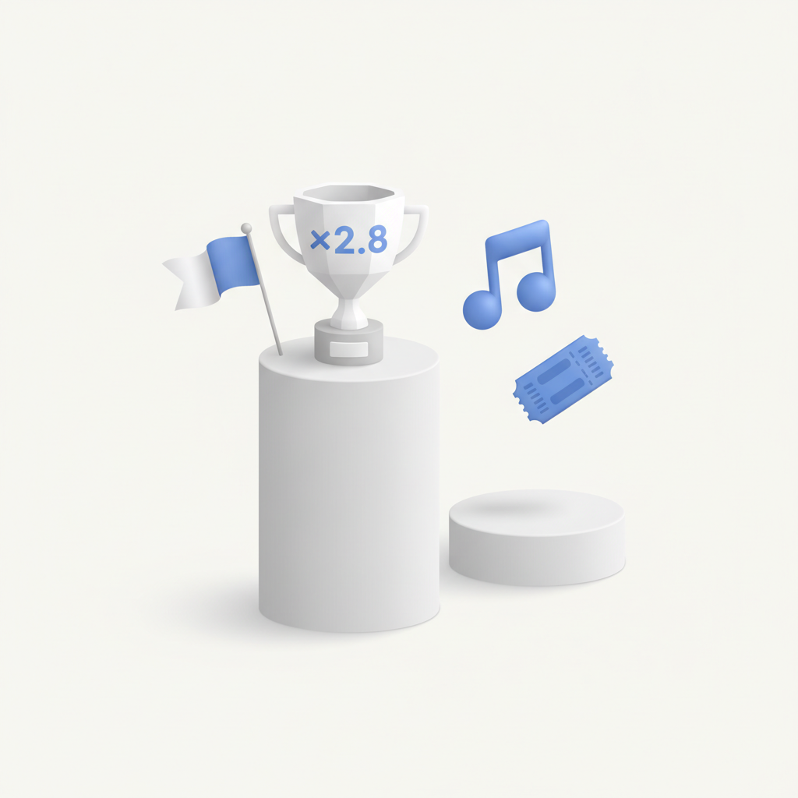
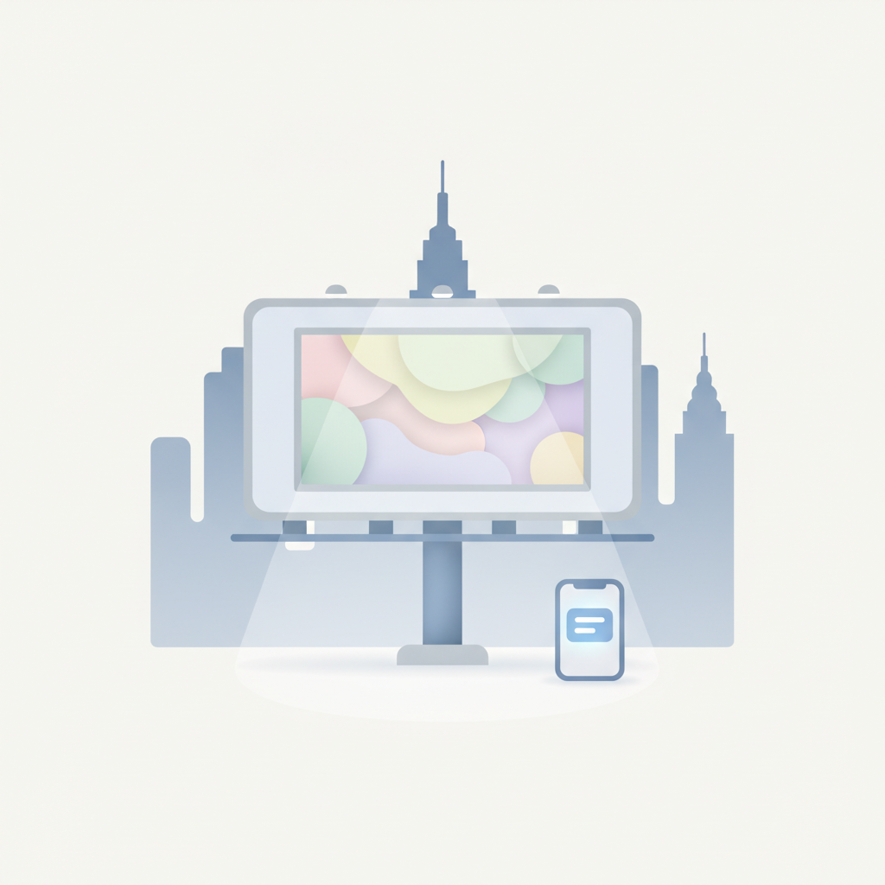
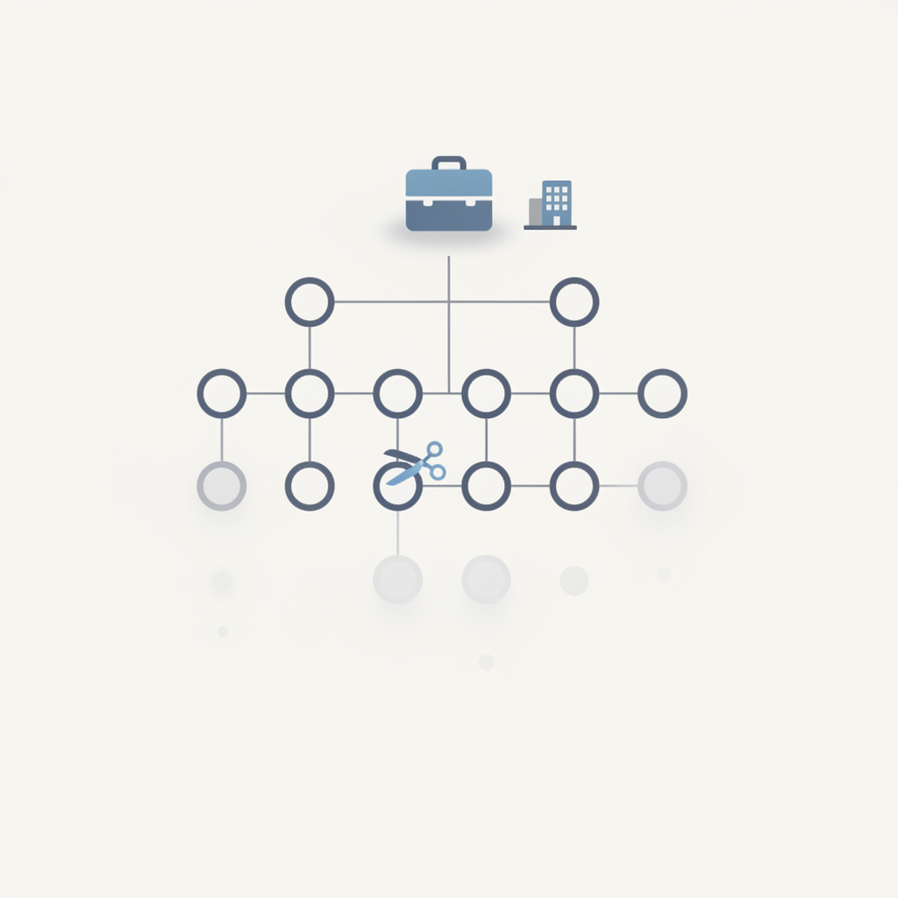
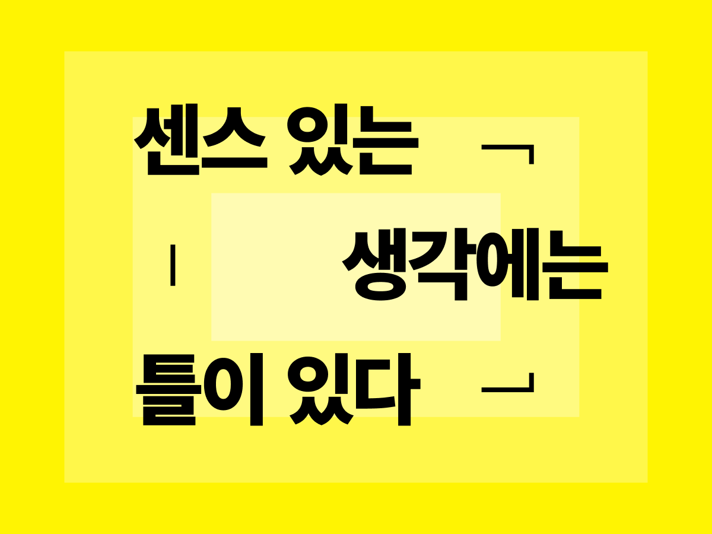

안녕하세요! 월요일 마케팅 소식 전해드립니다 😊 오늘은 AI가 브랜드 경쟁력의 새로운 축으로 떠오르는 흐름이 두드러집니다. 챗GPT·클로드·제미나이 같은 생성형 AI가 소비자의 정보 탐색과 구매 결정에 깊이 개입하면서, AI가 브랜드를 어떻게 인식하고 추천하는지를 관리하는 'AI 가시성'이 새로운 PR 경쟁력으로 부상하고 있습니다. OpenAI 역시 챗GPT 이미지 기능을 활용한 첫 대규모 OOH 캠페인을 LA·뉴욕 등 미국 주요 도시에서 전개하며, AI 기반 마케팅의 영역을 오프라인으로까지 확장하고 있습니다.
롱블랙에서는 일본 1위 광고기획사 마케터의 '인사이트' 파악법을 다루고 있어 함께 소개드립니다. '인사이트'라는 단어는 마케터라면 매일 쓰지만, 정작 그것을 제대로 발굴하고 설명하기가 쉽지 않죠. 소비자의 숨겨진 본심을 어떻게 읽어낼 것인지, 현장 감각이 담긴 이야기라 이번 주 업무에 바로 적용해볼 만한 내용입니다.
무신사의 '무진장 2026 여름 블랙프라이데이'가 성수동 오프라인 거점과 연계해 역대 최대 거래액을 기록했다는 소식도 인상적입니다. 온라인 세일에 오프라인 경험을 결합하는 방식이 실질적인 성과로 이어진 사례인 만큼, 커머스 전략을 고민하시는 분들께 좋은 참고가 될 것 같습니다. 이번 주도 좋은 인사이트 가득한 한 주 되시길 바랍니다! 🚀

1유튜브 연간 광고 매출이 400억 달러를 돌파했으나 성장세는 둔화 추세다. 쇼츠와 커넥티드 TV(CTV) 중심으로 이용자 소비는 증가하고 있지만, 틱톡과 넷플릭스의 광고 시장 공세가 거세지며 새로운 경쟁 국면이 형성되고 있다. WARC 미디어 보고서를 통해 확인된 이 흐름은 유튜브 광고 예산 배분 시 쇼츠·CTV 지면의 전략적 비중 확대를 검토해야 함을 시사한다.
›
2생성형 AI가 소비자 정보 탐색과 구매 결정에 깊숙이 개입하면서 챗GPT·클로드·제미나이 등이 브랜드를 어떻게 인식하고 추천하는지를 관리하는 'AI 가시성'이 새로운 PR 경쟁력으로 부상하고 있다. 멜트워터가 발표한 가이드는 언론 노출을 넘어 AI 학습 데이터에서의 브랜드 포지셔닝 관리를 강조한다. 마케터는 기존 SEO 전략과 함께 AI 추천 최적화(AEO) 전략을 병행할 필요가 있다.
› 3무신사의 시그니처 세일 행사 '무진장 2026 여름 블랙프라이데이'가 역대 최대 거래액을 기록했다. 신규 오프라인 거점 '무신사 메가스토어 성수' 개점과 맞물려 온라인 캠페인 성과를 오프라인 공간까지 연결하는 전략이 주효했다. 온·오프라인 통합 캠페인 설계와 지역 거점 공간을 브랜드 경험으로 활용하는 방식은 국내 이커머스 마케터에게 실질적인 참고 사례가 된다.
› 4넷플릭스가 2026년 2분기 실적 발표에서 올해 공개한 약 300편의 콘텐츠 제작에 생성형 AI를 적용했다고 밝혔다. AI는 기획·프리비주얼·후반 작업·최종 편집 등 제작 전 과정에 걸쳐 활용되며, 현재는 후반 작업에서 가장 광범위하게 쓰이고 있다. AI가 콘텐츠 제작 실험 단계를 넘어 산업 표준으로 자리 잡는 속도가 빨라지고 있어, 브랜드 콘텐츠 제작 workflow에서도 AI 도입 전략 수립이 시급해졌다.
›
5컬처랩이 커먼 인터레스트, 더그 샤피로와 공동 진행한 연구에서 문화적 관련성이 높은 브랜드는 그렇지 않은 브랜드보다 평균 2.8배 높은 기업가치를 인정받는 것으로 나타났다. 이는 브랜드 포지셔닝이 단순한 마케팅 지표를 넘어 재무적 가치와 직결됨을 실증한 결과다. 마케터는 문화 트렌드와의 접점을 브랜드 전략의 핵심 KPI로 반영하는 방안을 고려할 필요가 있다.
›
6오픈AI가 생성형 AI 이미지 기능 '챗GPT 이미지'를 활용한 첫 대규모 옥외광고 캠페인을 5월부터 8월까지 LA·뉴욕 등 미국 주요 도시에서 진행하고 있다. 제품 기능 나열 대신 각 지역 크리에이터들이 AI로 제작한 작품을 대형 빌보드에 전시해 공공 공간을 AI 갤러리로 전환한 것이 특징이다. AI 기술 자체를 크리에이티브의 증거로 제시하는 이 접근법은 AI 마케팅 커뮤니케이션의 새로운 방법론으로 주목할 만하다.
›
7글로벌 광고 그룹 WPP가 신임 CEO 신디 로즈의 중장기 전략 'Elevate28'에 따라 올해 말까지 수백 명 규모의 추가 감원을 단행할 예정이다. VML 등 일부 계열사와 재무·인사 등 백오피스 조직이 주요 대상으로, 일부 직원은 이미 감원 통보를 받은 것으로 알려졌다. 글로벌 광고 업계의 구조조정이 가속화되는 흐름은 국내 광고·마케팅 업계의 조직 운영 방향에도 참고 지점이 된다.
›
일을 하다 보면 참 자주 만나는 단어가 있죠. 바로 ‘인사이트insight’예요.하지만 정작 인사이트를 정확히 설명해야 할 때면, 말문이 막혀요.
아티클 읽기 →브랜드 진단부터 지금 당장 해야 할 우선순위까지,
30분 무료 상담에서 함께 정리해드려요.
이미 수십 개 브랜드가 상담받았습니다.
내 브랜드처럼, 함께 고민하는 팀원의 마음으로 봅니다.
스타트업 대표·마케팅 담당자를 위한 30분